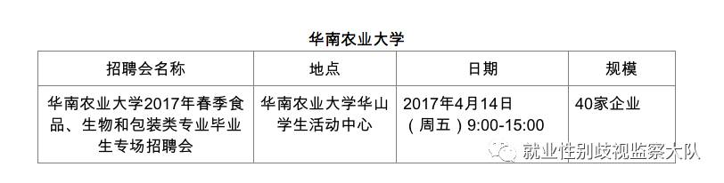
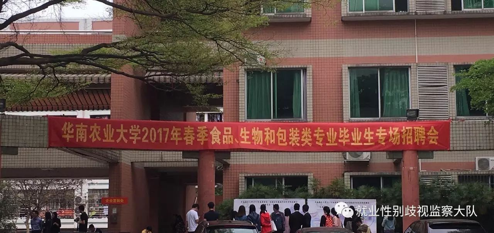
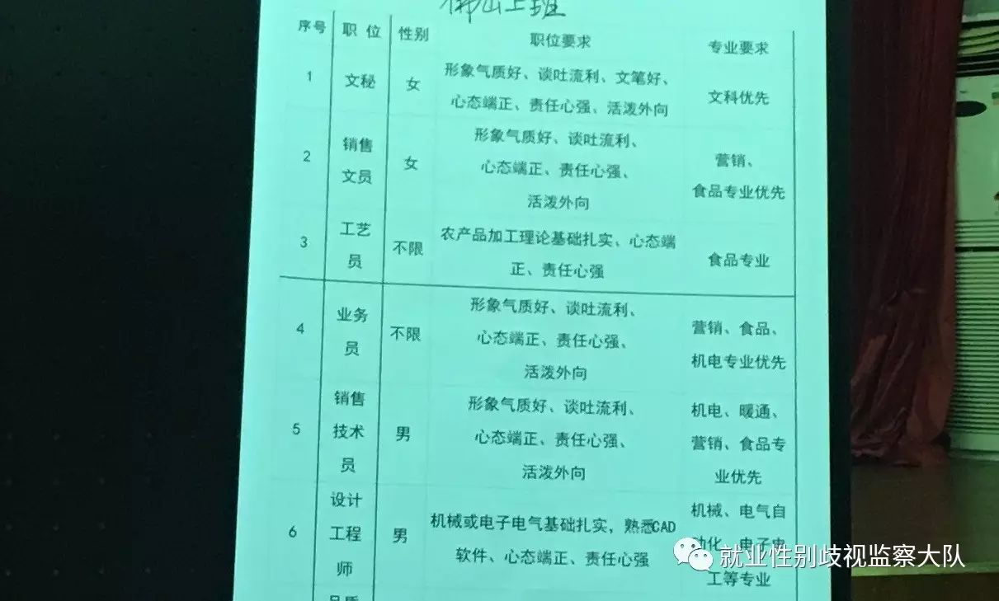
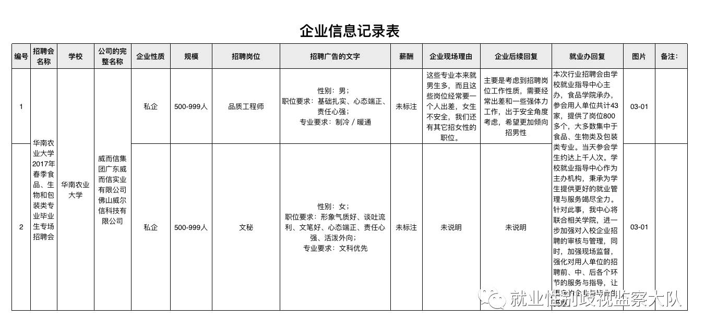
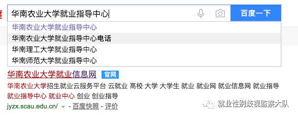
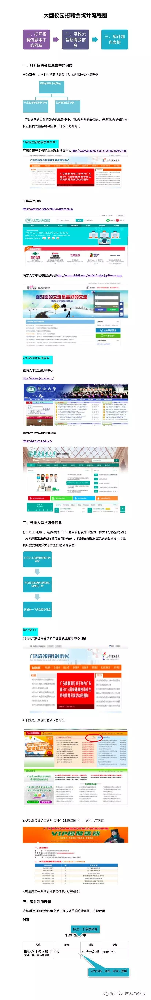

yi
zhou
yi
ji
hua
为了消除校园招聘中的显性就业性别歧视，监察小队要开启＃一周一校招＃计划啦，感兴趣的小伙伴可以按照以下方式，加入此计划～具体操作如下：
（以逛华南农业大学校招会为例）
01
找寻并记录即将到来的校园招聘会的具体信息：开始时间、地点、规模、专业等。（后有附图详细说明）

02
自己一人，或者找小伙伴一起前往校招现场，拍下认证照。（可以的话，从此时开始录音，记录接下来发生的事情，这即是证据，也便于后期的整理、回顾）

03
在招聘现场，寻找带有“限男”等字样的招聘广告，拍照／拍摄，记录下以下信息。

04
尝试和应聘企业交谈，得到［步骤3］未能在广告上直接得知的信息，询问应聘企业招聘限性别的理由。

05
可以在现场询问应聘者、工作人员相关问题，如：怎么看待就业限性别？有什么处理方案？期待等……（提前准备问题，征询过后，笔记／录音／拍摄等）

06
通过网络查询、现场询问等方式，取得高校就业指导中心的联系电话。（当天，招聘会结束前）打电话向高校就业指导中心反应情况：说明是哪场招聘会、哪家企业出现了哪种类型的就业性别歧视情况，询问是否有相关举措处理等。
07
记录下相关经历和高校就业指导中心的回复，整理发给监察小队，发文公布。

校园招聘中的性别歧视有哪些？想要一起逛校招的，加入我们吖！